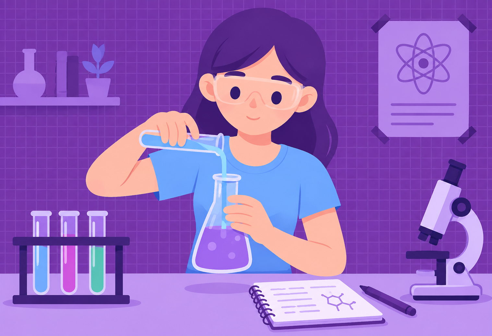
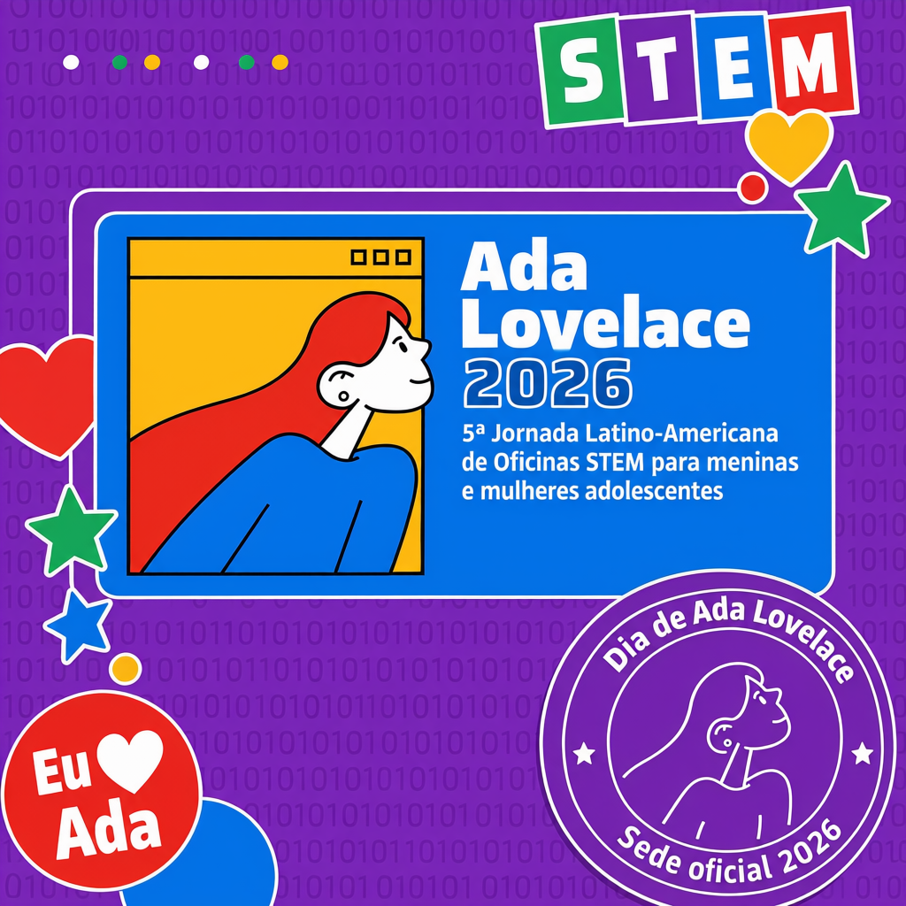
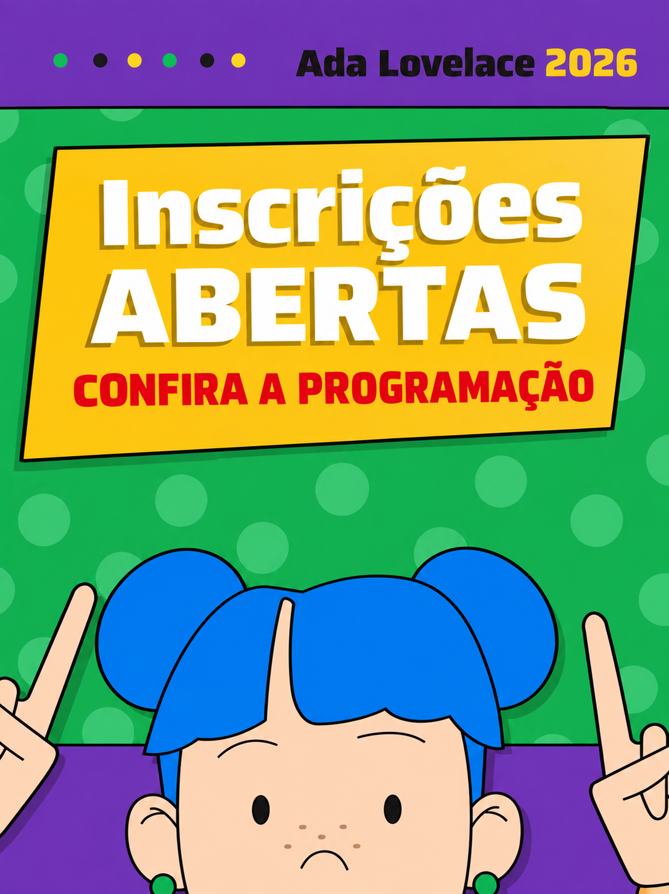
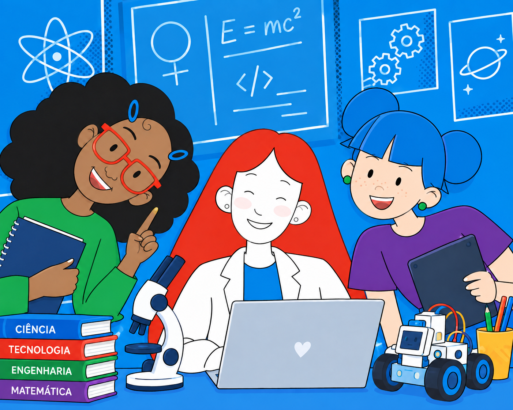

1
Preencha o formulário
O responsável informa os dados da menina e os próprios contatos.
Uma manhã de oficinas STEM para meninas de 10 a 12 anos, dentro da Jornada Ada Lovelace Day, organizada pela Unifesp.

A Jornada Latino-Americana de Oficinas STEM para meninas e mulheres adolescentes é um evento simultâneo, onde diversas sedes da América Latina organizam oficinas STEM, para fomentar o interesse na ciêencia por meninas jovens.
Meninas de 10 a 12 anos exploram ciência, tecnologia, engenharia e matemática juntas, com oficinas lúdicas e experimentais.

Esta inscrição é para a sede da Unifesp SJC. Uma inscrição por menina, feita por um adulto responsável.
O responsável informa os dados da menina e os próprios contatos.
Enviamos uma confirmação de recebimento. Confira também o spam.
Faça parte dessa experiência única conosco e venha experimentar e se aventurar pelo mundo STEM! .

Sábado, 7 de Novembro de 2026, das 8h às 13h.
MIC - Museu Interativo de Ciências - R. Prof. Felício Savastano
Ada Lovelace escreveu o que é considerado o primeiro programa de computador, em 1843.
Conheça a história dela e de outras cientistas que abriram caminho para as meninas de hoje.

As vagas da sede são limitadas e a inscrição é feita pelo responsável.